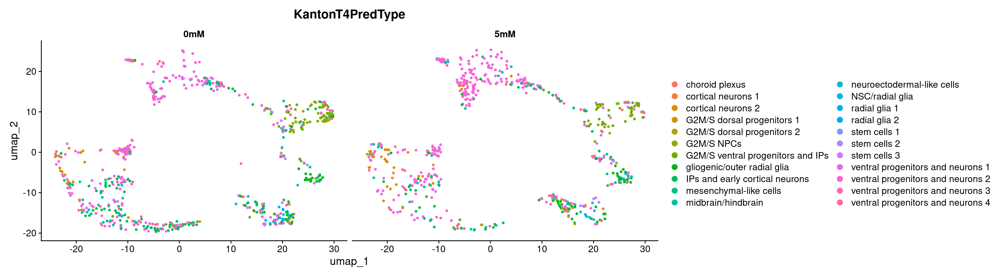
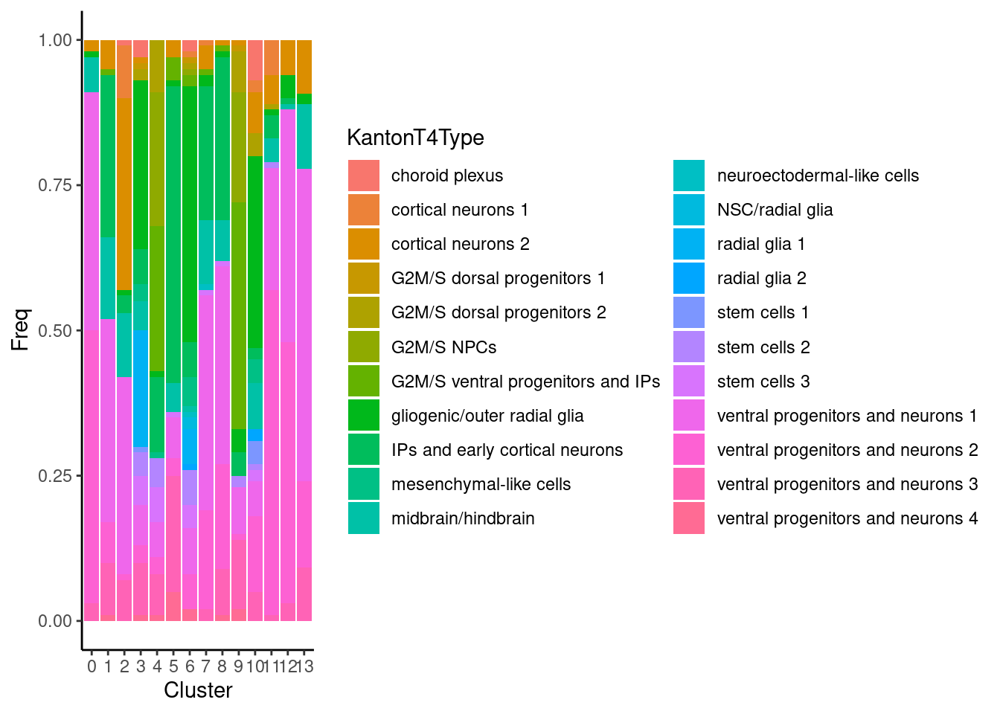

Cluster Identification
2023-01-12
Last updated: 2024-02-12
Checks: 7 0
Knit directory: files/
This reproducible R Markdown analysis was created with workflowr (version 1.7.1). The Checks tab describes the reproducibility checks that were applied when the results were created. The Past versions tab lists the development history.
Great! Since the R Markdown file has been committed to the Git repository, you know the exact version of the code that produced these results.
Great job! The global environment was empty. Objects defined in the global environment can affect the analysis in your R Markdown file in unknown ways. For reproduciblity it’s best to always run the code in an empty environment.
The command set.seed(20240103) was run prior to running
the code in the R Markdown file. Setting a seed ensures that any results
that rely on randomness, e.g. subsampling or permutations, are
reproducible.
Great job! Recording the operating system, R version, and package versions is critical for reproducibility.
Nice! There were no cached chunks for this analysis, so you can be confident that you successfully produced the results during this run.
Great job! Using relative paths to the files within your workflowr project makes it easier to run your code on other machines.
Great! You are using Git for version control. Tracking code development and connecting the code version to the results is critical for reproducibility.
The results in this page were generated with repository version d6ec671. See the Past versions tab to see a history of the changes made to the R Markdown and HTML files.
Note that you need to be careful to ensure that all relevant files for
the analysis have been committed to Git prior to generating the results
(you can use wflow_publish or
wflow_git_commit). workflowr only checks the R Markdown
file, but you know if there are other scripts or data files that it
depends on. Below is the status of the Git repository when the results
were generated:
Ignored files:
Ignored: .Rhistory
Ignored: .Rprofile
Ignored: .Rproj.user/
Ignored: output/05_Bulk_Preprocessing/
Untracked files:
Untracked: .bashrc
Untracked: .nuvolos/
Untracked: data/AstrocyteGenes.xlsx
Untracked: data/Bulk_dds_matrix.rds
Untracked: data/Bulkdata_Countmatrix.rds
Untracked: data/HumDev/
Untracked: data/Kanton/
Untracked: data/KantonGeneList/
Untracked: data/Knoblich/
Untracked: data/Kynurenine_genes.xlsx
Untracked: data/Kynurenine_genes_orig.xlsx
Untracked: data/QC_data.filt.rds
Untracked: data/QC_dataClustered.filt.rds
Untracked: data/QC_dataClustered.filtTyped.rds
Untracked: data/QC_dataClustered.filtTypedTraj.rds
Untracked: data/QC_dataFinal.rds
Untracked: data/Sample Allocation P2023-224-LEX-LB.txt
Untracked: data/alldata.rds
Untracked: data/chr16p11.xlsx
Untracked: data/chr16p11_orig.xlsx
Untracked: data/tmp.xlsx
Unstaged changes:
Modified: .gitignore
Modified: output/02_Clustering/Cluster_markers.xls
Modified: output/02_Clustering/Clusters_GO_termsCluster.xlsx
Modified: workflowHelper.R
Note that any generated files, e.g. HTML, png, CSS, etc., are not included in this status report because it is ok for generated content to have uncommitted changes.
These are the previous versions of the repository in which changes were
made to the R Markdown
(analysis/02_02_Clustering_Mapping_scRNA.Rmd) and HTML
(docs/02_02_Clustering_Mapping_scRNA.html) files. If you’ve
configured a remote Git repository (see ?wflow_git_remote),
click on the hyperlinks in the table below to view the files as they
were in that past version.
| File | Version | Author | Date | Message |
|---|---|---|---|---|
| Rmd | d6ec671 | Andreas Chiocchetti | 2024-02-12 | wflow_publish(c("./analysis/.Rmd", "./code/", "./docs/", "output/")) |
| html | d6ec671 | Andreas Chiocchetti | 2024-02-12 | wflow_publish(c("./analysis/.Rmd", "./code/", "./docs/", "output/")) |
| html | a6d55a7 | Andreas Chiocchetti | 2024-01-18 | Build site. |
| html | 59bee55 | Andreas Chiocchetti | 2024-01-14 | Build site. |
| html | 472919f | Andreas Chiocchetti | 2024-01-12 | Build site. |
| html | 9044a86 | Andreas Chiocchetti | 2024-01-11 | Build site. |
| html | f206c28 | Andreas Chiocchetti | 2024-01-11 | wflow_publish(c("./analysis/.Rmd", "./code/", "./docs/*")) |
| Rmd | bca1a73 | Andreas Chiocchetti | 2024-01-09 | intermediate stage bulk seq |
Clustering Analysis
Mapping of clusters to reference data sets
Knoblich Clusters
Cluster
KnoblichType 0 1 2 3 4 5 6 7 8 9 10 11 12 13
knoblich_01 71 3 4 5 0 6 0 1 28 0 12 5 43 28
knoblich_02 0 0 0 3 1 0 18 0 9 1 2 1 1 0
knoblich_03 2 5 28 11 0 2 2 4 1 5 19 2 5 0
knoblich_04 0 0 0 12 1 0 32 1 0 0 5 0 0 0
knoblich_05 0 7 6 2 0 1 0 20 0 0 6 59 5 1
knoblich_06 0 0 0 0 4 0 0 0 0 11 0 0 0 0
knoblich_07 20 41 43 23 28 50 13 42 44 33 33 20 36 19
knoblich_08 0 20 0 30 12 25 7 10 7 3 10 1 0 0
knoblich_09 3 0 0 0 6 2 1 1 9 31 0 0 0 0
knoblich_10 1 0 0 9 44 1 22 0 0 7 1 1 0 0
knoblich_12 0 0 2 0 0 0 1 0 0 0 3 0 0 0
knoblich_13 2 4 9 0 0 1 1 5 0 0 0 5 7 5
knoblich_14 1 17 1 0 0 3 1 16 0 1 0 6 3 1
knoblich_15 0 0 0 3 0 0 2 0 0 0 4 0 0 0
knoblich_16 0 3 7 2 4 9 0 0 2 8 5 0 0 0
Pearson's Chi-squared test
data: crosstab
X-squared = 2429.9, df = 182, p-value < 2.2e-16 used (Mb) gc trigger (Mb) max used (Mb)
Ncells 10189271 544.2 17877388 954.8 17877388 954.8
Vcells 78396543 598.2 258505145 1972.3 323131431 2465.3Knoblich Map to annotation

Astrocytes ccRG ccvRG CGE_IN CGE_LGE_IN INP IP L23 L4 L56 L6_CThPN
0 1 0 1 1852 7 20 2 0 0 3 0
1 16 0 0 15 0 3 119 63 53 1428 13
2 11 0 0 8 0 0 3 585 11 64 188
3 158 34 0 1 0 1 7 0 0 1 0
4 10 219 287 8 0 81 3 0 0 0 0
5 11 22 7 5 1 4 387 0 0 143 0
6 431 0 15 1 0 34 2 0 0 0 0
7 5 0 0 12 0 0 43 58 8 364 39
8 3 0 6 208 10 160 0 0 0 0 0
9 0 135 214 0 0 1 1 0 0 0 0
10 75 11 0 3 0 3 17 0 0 0 0
11 10 0 1 30 1 0 28 20 1 53 81
12 4 0 1 202 1 9 0 1 0 1 0
13 0 0 0 54 0 0 0 0 0 0 0
LGE_IN mesenchyme oRG RG vRG
0 121 0 1 0 0
1 1 0 1 0 0
2 0 0 0 0 0
3 0 0 432 12 1
4 1 0 1 0 7
5 0 0 7 0 0
6 1 0 0 0 67
7 0 0 0 0 0
8 12 0 0 0 0
9 0 0 0 0 0
10 0 1 217 4 1
11 1 0 0 0 0
12 5 0 0 0 0
13 0 0 0 0 0
used (Mb) gc trigger (Mb) max used (Mb)
Ncells 10274999 548.8 17877388 954.8 17877388 954.8
Vcells 79023975 603.0 515539938 3933.3 805531152 6145.8Kanton et al Table 4 Celltypes



Cluster
KantonT4Type 0 1 2 3 4 5 6 7 8 9 10 11 12 13
choroid plexus 0 0 1 3 0 0 2 0 0 0 7 0 0 0
cortical neurons 1 0 0 9 0 0 0 1 1 0 0 2 6 0 0
cortical neurons 2 2 5 33 1 0 3 0 4 1 1 7 5 6 5
G2M/S dorsal progenitors 1 0 0 0 1 0 0 1 0 0 1 0 0 0 0
G2M/S dorsal progenitors 2 0 0 0 2 9 0 1 0 0 7 4 1 0 0
G2M/S NPCs 0 0 0 0 23 0 1 0 0 19 0 0 0 0
G2M/S ventral progenitors and IPs 0 1 0 0 25 4 2 1 1 39 0 0 0 0
gliogenic/outer radial glia 1 0 1 29 1 1 44 2 1 4 33 1 4 1
IPs and early cortical neurons 0 28 3 6 13 51 6 23 28 4 2 4 1 0
mesenchymal-like cells 0 0 0 3 1 0 5 0 0 0 4 0 0 0
midbrain/hindbrain 6 14 11 5 0 5 1 11 7 0 8 4 1 6
neuroectodermal-like cells 0 0 0 0 0 0 1 1 0 0 0 0 0 0
NSC/radial glia 0 0 0 0 0 0 2 0 0 0 0 0 0 0
radial glia 1 0 0 0 20 0 0 6 0 0 0 0 0 0 0
radial glia 2 0 0 0 0 0 0 1 0 0 0 2 0 0 0
stem cells 1 0 0 0 1 0 0 0 0 0 0 4 0 0 0
stem cells 2 0 0 0 4 5 0 6 0 0 2 1 1 0 0
stem cells 3 0 0 0 5 6 1 4 1 1 0 2 0 0 0
ventral progenitors and neurons 1 41 35 34 7 6 7 8 37 34 8 6 21 40 29
ventral progenitors and neurons 2 47 7 1 3 3 3 6 17 18 1 13 56 45 8
ventral progenitors and neurons 3 3 9 7 9 7 20 0 2 8 12 5 1 3 5
ventral progenitors and neurons 4 0 1 0 1 1 5 2 0 1 2 0 0 0 0
Pearson's Chi-squared test
data: crosstab
X-squared = 2415, df = 273, p-value < 2.2e-16Kanton et al Table 14 Celltypes

Cluster
Kanton14Type 0 1 2 3 4 5 6 7 8 9 10 11 12 13
Ast 3 3 19 35 4 3 35 3 2 5 51 3 7 1
End/Per 3 37 4 25 39 51 12 29 37 26 20 38 15 13
Ex 31 34 22 5 7 8 2 39 6 4 5 42 27 24
In 40 0 0 0 1 0 1 0 10 0 0 4 13 6
Mic 11 3 4 6 2 5 4 4 4 2 1 1 6 1
Oli 3 12 31 15 37 23 6 6 9 60 21 6 18 2
OPC 9 11 20 14 10 10 40 19 32 3 2 6 14 7
Pearson's Chi-squared test
data: crosstab
X-squared = 1093.7, df = 78, p-value < 2.2e-16 used (Mb) gc trigger (Mb) max used (Mb)
Ncells 10245259 547.2 17877394 954.8 17877394 954.8
Vcells 78807326 601.3 329953480 2517.4 805531152 6145.8HumanDevData Map to annotation
.
HsapDv:0000099 HsapDv:0000100 HsapDv:0000101 HsapDv:0000102 HsapDv:0000103
36490 210331 16843 83258 34820
HsapDv:0000104 HsapDv:0000105 HsapDv:0000106 HsapDv:0000107 HsapDv:0000108
26622 30871 25957 11630 23178 .
b'Brain' b'Caudate-Putamen' b'Cerebellum'
25722 3965 42608
b'Cortex' b'Cortical hem' b'Diencephalon'
44764 2107 10338
b'Dorsal midbrain' b'Enthorinal cortex' b'Forebrain cortex'
13075 3230 4769
b'Forebrain' b'Frontotemporal cortex' b'Head'
58623 6732 2034
b'Hindbrain' b'Hippocampus' b'Hypothalamus'
14771 10478 14098
b'Lower cortex' b'Medulla' b'Mesencephalon'
5446 38461 48963
b'Midbrain' b'Occipital cortex' b'Pons'
9984 4063 18849
b'Pons/Cereb' b'Pons/Medulla' b'Striatum'
10061 4109 28578
b'Subcortex' b'Subcortical forebrain' b'Tel/diencephalon'
8736 16143 5033
b'Telencephalon' b'Thalamus' b'Upper cortex'
2161 33097 4043
b'Ventral midbrain'
4959 .
b'Brain' b'Caudate+Putamen' b'Cerebellum'
25722 3965 42608
b'Cortex entorhinal' b'Cortex frontal' b'Cortex hemisphere A'
3230 6732 2128
b'Cortex hemisphere B' b'Cortex occipital' b'Cortex parietal'
3921 4063 4043
b'Cortex temporal' b'Cortex' b'Cortical hem'
5446 43484 2107
b'Diencephalon' b'Forebrain' b'Head'
10338 63656 2034
b'Hindbrain' b'Hippocampus' b'Hypothalamus'
18880 4691 14098
b'Medulla' b'Midbrain dorsal' b'Midbrain ventral'
38461 13075 4959
b'Midbrain' b'Pons' b'Striatum'
58947 28910 28578
b'Subcortex' b'Telencephalon' b'Thalamus'
30666 2161 33097 .
b'Brain' b'Cerebellum' b'Cortex' b'Diencephalon'
25722 42608 75154 10338
b'Forebrain' b'Head' b'Hindbrain' b'Hippocampus'
63656 2034 18880 4691
b'Hypothalamus' b'Medulla' b'Midbrain dorsal' b'Midbrain ventral'
14098 38461 13075 4959
b'Midbrain' b'Pons' b'Striatum' b'Subcortex'
58947 28910 32543 30666
b'Telencephalon' b'Thalamus'
2161 33097 .
b'Brain' b'Caudate-Putamen' b'Cerebellum'
25722 3965 42608
b'Cortex' b'Cortical hem' b'Diencephalon'
44764 2107 10338
b'Dorsal midbrain' b'Enthorinal cortex' b'Forebrain cortex'
13075 3230 4769
b'Forebrain' b'Frontotemporal cortex' b'Head'
58623 6732 2034
b'Hindbrain' b'Hippocampus' b'Hypothalamus'
14771 10478 14098
b'Lower cortex' b'Medulla' b'Mesencephalon'
5446 38461 48963
b'Midbrain' b'Occipital cortex' b'Pons'
9984 4063 18849
b'Pons/Cereb' b'Pons/Medulla' b'Striatum'
10061 4109 28578
b'Subcortex' b'Subcortical forebrain' b'Tel/diencephalon'
8736 16143 5033
b'Telencephalon' b'Thalamus' b'Upper cortex'
2161 33097 4043
b'Ventral midbrain'
4959 development_stage_ontology_term_id
CellClass HsapDv:0000099 HsapDv:0000100 HsapDv:0000101 HsapDv:0000102
b'Erythrocyte' 178 489 42 308
b'Fibroblast' 4009 117 0 470
b'Glioblast' 2 1064 1019 6072
b'Immune' 72 329 31 250
b'Neural crest' 113 48 0 22
b'Neuroblast' 5254 37245 2935 12777
b'Neuron' 8655 64546 5811 37036
b'Neuronal IPC' 655 10264 2101 5755
b'Oligo' 1 17 8 175
b'Placodes' 104 155 0 1
b'Radial glia' 17349 95493 4828 20056
b'Vascular' 98 564 68 336
development_stage_ontology_term_id
CellClass HsapDv:0000103 HsapDv:0000104 HsapDv:0000105 HsapDv:0000106
b'Erythrocyte' 126 27 460 568
b'Fibroblast' 475 0 439 15
b'Glioblast' 5359 3168 5959 7458
b'Immune' 139 49 326 284
b'Neural crest' 32 0 34 12
b'Neuroblast' 4949 4828 6165 5858
b'Neuron' 13509 10008 12009 6640
b'Neuronal IPC' 2934 2180 2627 2449
b'Oligo' 208 58 235 456
b'Placodes' 2 0 0 0
b'Radial glia' 6894 6247 2118 1697
b'Vascular' 193 57 499 520
development_stage_ontology_term_id
CellClass HsapDv:0000107 HsapDv:0000108
b'Erythrocyte' 58 427
b'Fibroblast' 37 201
b'Glioblast' 3073 6456
b'Immune' 164 665
b'Neural crest' 6 1
b'Neuroblast' 1929 4135
b'Neuron' 3763 6521
b'Neuronal IPC' 1223 2625
b'Oligo' 311 402
b'Placodes' 0 0
b'Radial glia' 839 851
b'Vascular' 227 894 used (Mb) gc trigger (Mb) max used (Mb)
Ncells 11347294 606.1 17877394 954.8 17877394 954.8
Vcells 156492851 1194.0 5398852680 41190.0 6214200040 47410.6Modularity Optimizer version 1.3.0 by Ludo Waltman and Nees Jan van Eck
Number of nodes: 17262
Number of edges: 592468
Running Louvain algorithm...
Maximum modularity in 10 random starts: 0.9375
Number of communities: 31
Elapsed time: 1 seconds used (Mb) gc trigger (Mb) max used (Mb)
Ncells 11447402 611.4 17877394 954.8 17877394 954.8
Vcells 814067815 6210.9 2211370059 16871.5 6214200040 47410.6


$`1`
$`2`
$`3`
$`4`
$`5`
$`6`
$`7`
attr(,"class")
[1] "list" "ggarrange" used (Mb) gc trigger (Mb) max used (Mb)
Ncells 11917917 636.5 17877394 954.8 17877394 954.8
Vcells 94371888 720.1 2122979256 16197.1 6214200040 47410.6
R version 4.3.1 (2023-06-16)
Platform: x86_64-pc-linux-gnu (64-bit)
Running under: Ubuntu 22.04.2 LTS
Matrix products: default
BLAS: /usr/lib/x86_64-linux-gnu/openblas-pthread/libblas.so.3
LAPACK: /usr/lib/x86_64-linux-gnu/openblas-pthread/libopenblasp-r0.3.20.so; LAPACK version 3.10.0
locale:
[1] LC_CTYPE=en_US.UTF-8 LC_NUMERIC=C
[3] LC_TIME=en_US.UTF-8 LC_COLLATE=en_US.UTF-8
[5] LC_MONETARY=en_US.UTF-8 LC_MESSAGES=en_US.UTF-8
[7] LC_PAPER=en_US.UTF-8 LC_NAME=C
[9] LC_ADDRESS=C LC_TELEPHONE=C
[11] LC_MEASUREMENT=en_US.UTF-8 LC_IDENTIFICATION=C
time zone: Etc/UTC
tzcode source: system (glibc)
attached base packages:
[1] stats4 stats graphics grDevices utils datasets methods
[8] base
other attached packages:
[1] org.Hs.eg.db_3.17.0 AnnotationDbi_1.64.1
[3] scSorter_0.0.2 clustree_0.5.1
[5] ggraph_2.1.0 CATALYST_1.24.0
[7] reshape2_1.4.4 pals_1.8
[9] gprofiler2_0.2.2 viridis_0.6.4
[11] viridisLite_0.4.2 cowplot_1.1.2
[13] randomcoloR_1.1.0.1 RCurl_1.98-1.13
[15] RColorBrewer_1.1-3 data.table_1.14.10
[17] lubridate_1.9.3 forcats_1.0.0
[19] stringr_1.5.1 dplyr_1.1.4
[21] purrr_1.0.2 readr_2.1.4
[23] tidyr_1.3.0 tibble_3.2.1
[25] tidyverse_2.0.0 scater_1.28.0
[27] scuttle_1.10.3 Seurat_5.0.1
[29] SeuratObject_5.0.1 sp_2.1-2
[31] SingleCellExperiment_1.24.0 ggpubr_0.6.0
[33] ggplot2_3.4.4 SingleR_2.2.0
[35] SummarizedExperiment_1.32.0 Biobase_2.62.0
[37] GenomicRanges_1.54.1 GenomeInfoDb_1.38.1
[39] IRanges_2.36.0 S4Vectors_0.40.2
[41] BiocGenerics_0.48.1 MatrixGenerics_1.14.0
[43] matrixStats_1.1.0 workflowr_1.7.1
loaded via a namespace (and not attached):
[1] dichromat_2.0-0.1 goftest_1.2-3
[3] Biostrings_2.68.1 TH.data_1.1-2
[5] vctrs_0.6.5 spatstat.random_3.2-2
[7] digest_0.6.33 png_0.1-8
[9] shape_1.4.6 git2r_0.33.0
[11] ggrepel_0.9.4 deldir_2.0-2
[13] parallelly_1.36.0 MASS_7.3-60
[15] httpuv_1.6.13 foreach_1.5.2
[17] withr_2.5.2 xfun_0.41
[19] ellipsis_0.3.2 survival_3.5-7
[21] memoise_2.0.1 ggbeeswarm_0.7.2
[23] RProtoBufLib_2.12.1 drc_3.0-1
[25] systemfonts_1.0.5 ragg_1.2.7
[27] zoo_1.8-12 GlobalOptions_0.1.2
[29] gtools_3.9.5 V8_4.4.1
[31] pbapply_1.7-2 KEGGREST_1.40.1
[33] promises_1.2.1 httr_1.4.7
[35] rstatix_0.7.2 globals_0.16.2
[37] fitdistrplus_1.1-11 ps_1.7.5
[39] rstudioapi_0.15.0 miniUI_0.1.1.1
[41] generics_0.1.3 processx_3.8.3
[43] curl_5.2.0 zlibbioc_1.48.0
[45] ScaledMatrix_1.8.1 polyclip_1.10-6
[47] GenomeInfoDbData_1.2.11 SparseArray_1.2.2
[49] xtable_1.8-4 doParallel_1.0.17
[51] evaluate_0.23 S4Arrays_1.2.0
[53] hms_1.1.3 irlba_2.3.5.1
[55] colorspace_2.1-0 ROCR_1.0-11
[57] reticulate_1.34.0 spatstat.data_3.0-3
[59] magrittr_2.0.3 lmtest_0.9-40
[61] later_1.3.2 lattice_0.22-5
[63] mapproj_1.2.11 spatstat.geom_3.2-7
[65] future.apply_1.11.1 getPass_0.2-4
[67] scattermore_1.2 XML_3.99-0.16
[69] RcppAnnoy_0.0.21 pillar_1.9.0
[71] nlme_3.1-164 iterators_1.0.14
[73] compiler_4.3.1 beachmat_2.16.0
[75] RSpectra_0.16-1 stringi_1.8.3
[77] tensor_1.5 plyr_1.8.9
[79] crayon_1.5.2 abind_1.4-5
[81] graphlayouts_1.0.2 bit_4.0.5
[83] sandwich_3.1-0 whisker_0.4.1
[85] codetools_0.2-19 multcomp_1.4-25
[87] textshaping_0.3.7 BiocSingular_1.16.0
[89] bslib_0.6.1 GetoptLong_1.0.5
[91] plotly_4.10.3 mime_0.12
[93] splines_4.3.1 circlize_0.4.15
[95] Rcpp_1.0.11 fastDummies_1.7.3
[97] sparseMatrixStats_1.12.2 knitr_1.45
[99] blob_1.2.4 utf8_1.2.4
[101] clue_0.3-65 fs_1.6.3
[103] listenv_0.9.0 nnls_1.5
[105] DelayedMatrixStats_1.22.6 ggsignif_0.6.4
[107] Matrix_1.6-4 callr_3.7.3
[109] tzdb_0.4.0 svglite_2.1.3
[111] tweenr_2.0.2 pkgconfig_2.0.3
[113] tools_4.3.1 cachem_1.0.8
[115] RSQLite_2.3.4 DBI_1.2.0
[117] fastmap_1.1.1 rmarkdown_2.25
[119] scales_1.3.0 grid_4.3.1
[121] ica_1.0-3 broom_1.0.5
[123] sass_0.4.8 patchwork_1.2.0
[125] dotCall64_1.1-1 carData_3.0-5
[127] RANN_2.6.1 farver_2.1.1
[129] tidygraph_1.3.0 yaml_2.3.8
[131] cli_3.6.2 leiden_0.4.3.1
[133] lifecycle_1.0.4 uwot_0.1.16
[135] mvtnorm_1.2-4 backports_1.4.1
[137] BiocParallel_1.34.2 cytolib_2.12.1
[139] timechange_0.2.0 gtable_0.3.4
[141] rjson_0.2.21 ggridges_0.5.5
[143] progressr_0.14.0 parallel_4.3.1
[145] jsonlite_1.8.8 RcppHNSW_0.5.0
[147] bitops_1.0-7 bit64_4.0.5
[149] Rtsne_0.17 FlowSOM_2.8.0
[151] spatstat.utils_3.0-4 BiocNeighbors_1.18.0
[153] flowCore_2.12.2 jquerylib_0.1.4
[155] highr_0.10 lazyeval_0.2.2
[157] shiny_1.8.0 ConsensusClusterPlus_1.64.0
[159] htmltools_0.5.7 sctransform_0.4.1
[161] glue_1.6.2 spam_2.10-0
[163] XVector_0.42.0 rprojroot_2.0.4
[165] gridExtra_2.3 igraph_1.6.0
[167] R6_2.5.1 labeling_0.4.3
[169] cluster_2.1.6 DelayedArray_0.28.0
[171] tidyselect_1.2.0 vipor_0.4.7
[173] plotrix_3.8-4 maps_3.4.2
[175] ggforce_0.4.1 car_3.1-2
[177] future_1.33.1 rsvd_1.0.5
[179] munsell_0.5.0 KernSmooth_2.23-22
[181] htmlwidgets_1.6.4 ComplexHeatmap_2.16.0
[183] rlang_1.1.2 spatstat.sparse_3.0-3
[185] spatstat.explore_3.2-5 colorRamps_2.3.1
[187] ggnewscale_0.4.9 fansi_1.0.6
[189] beeswarm_0.4.0